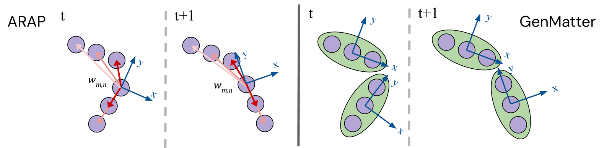
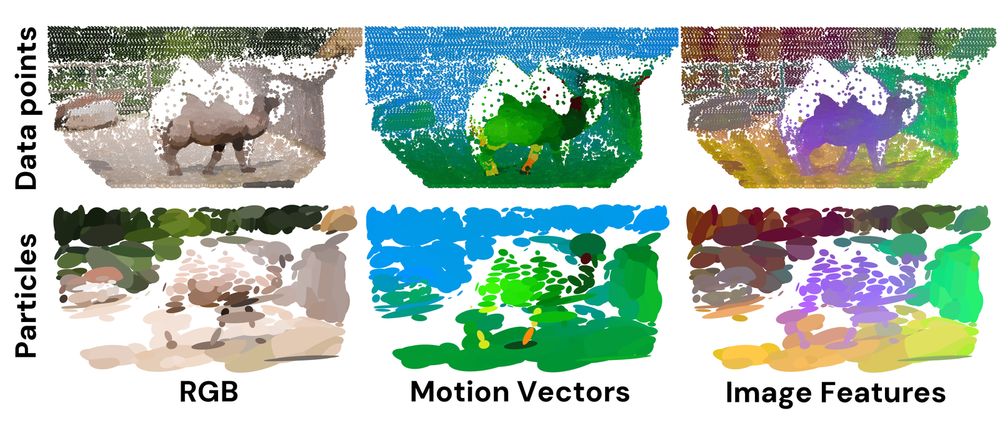
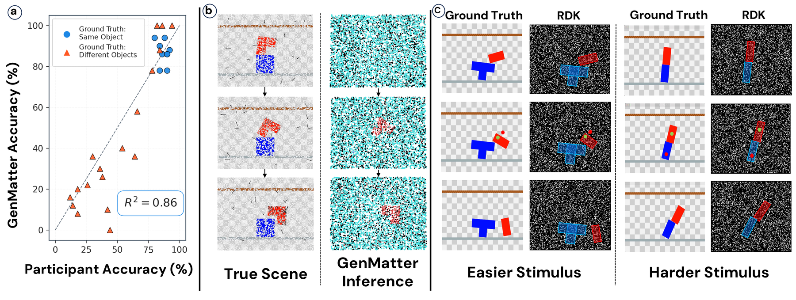
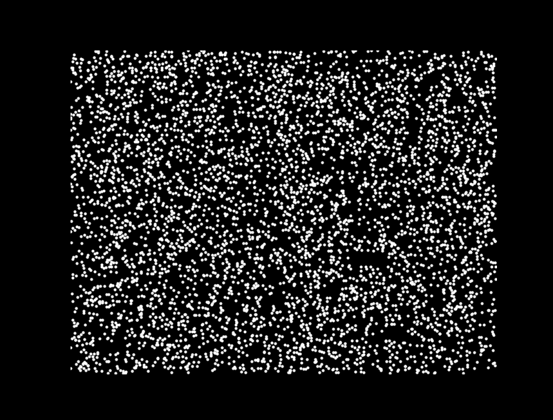
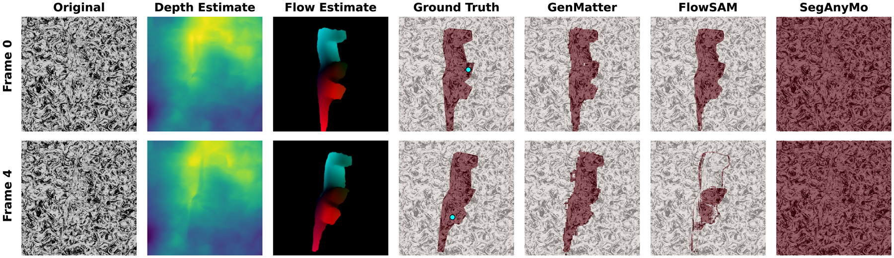
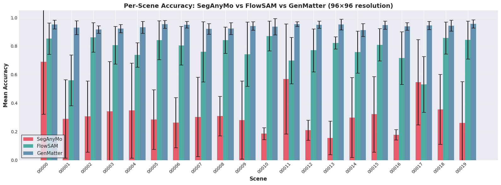
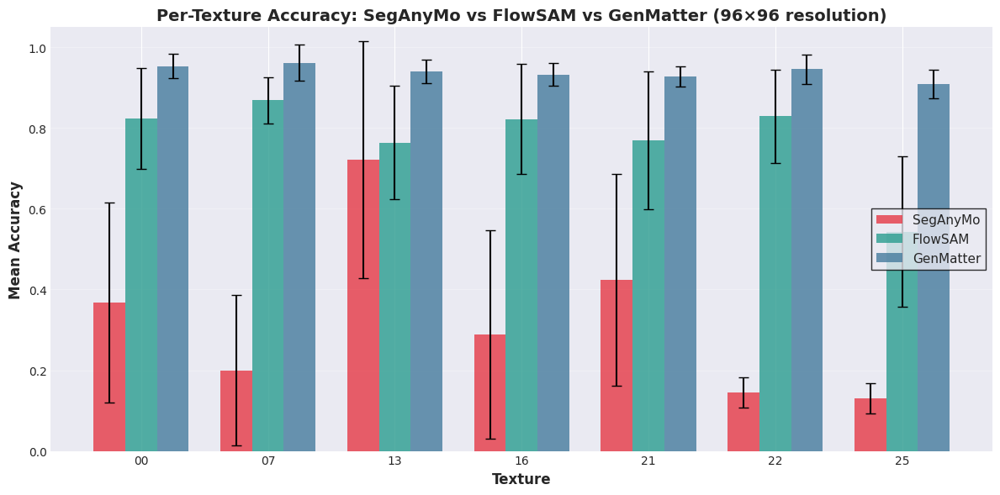

Human visual perception offers valuable insights for understanding computational principles of motion-based scene interpretation. Humans robustly detect and segment moving entities that constitute independently moveable chunks of matter, whether observing sparse moving dots, textured surfaces, or naturalistic scenes. In contrast, existing computer vision systems lack a unified approach that works across these diverse settings. Inspired by principles of human perception, we propose a generative model that hierarchically groups low-level motion cues and high-level appearance features into particles, and groups particles into clusters capturing coherently and independently moveable physical entities.
We develop a hardware-accelerated inference algorithm based on parallelized block Gibbs sampling to recover stable particle motion and groupings. Across random dot kinematograms, Gestalt-inspired camouflaged scenes, and naturalistic RGB video, GenMatter recovers graded uncertainty, accurate segmentation, and robust object-level representations in settings where biological vision succeeds but existing computer vision systems remain specialized.
GenMatter handles ambiguous random-dot motion, camouflaged structure-from-motion stimuli, and naturalistic RGB video with the same structured probabilistic core.
Local Gaussians represent matter at the particle level, while a higher-level clustering layer captures independently moveable entities and soft rigidity constraints.
Parallel block Gibbs sampling lets the model integrate motion, geometry, and appearance online instead of relying on task-specific supervised training.



On 27 random-dot stimuli, GenMatter closely matches human same-object judgments and captures graded perceptual uncertainty across both easy and ambiguous conditions.

A representative RDK stimulus where sparse motion cues alone must support object grouping.
Example inference video showing the model’s recovered moving structure under an easier motion condition.

In camouflaged rotating scenes where static appearance is uninformative, GenMatter recovers 3D structure from motion and produces stronger segmentation than supervised baselines.
Rendered Gestalt stimulus with matched foreground and background texture.
Posterior segmentation video illustrating how coherent matter structure emerges over time.

Per-scene accuracy stays strong across the full benchmark rather than only a narrow set of examples.

The improvement is consistent across texture patterns, showing robustness to camouflage rather than overfitting to appearance cues.
A second qualitative example showing generalization across geometry and texture settings.
On naturalistic video, GenMatter builds 3D particle representations that match supervised trackers on projected 2D metrics while remaining grounded in a reusable probabilistic scene model.
Camel sequence showing coherent particle assignment across articulated, textured matter.
Cloth bag example illustrating how local particles support highly deformable motion.
Large nonrigid motion remains grouped into stable object-level structure over time.
Appearance features, motion, and depth cues combine to preserve identity in realistic scenes.
@inproceedings{li2026genmatter,
title = {GenMatter: Perceiving Physical Objects with Generative Matter Models},
author = {Li, Eric and Dasgupta, Arijit and Friedman, Yoni and Huot, Mathieu and Mansinghka, Vikash and O'Connell, Thomas and Freeman, William T. and Tenenbaum, Joshua B.},
booktitle = {Proceedings of the IEEE/CVF Conference on Computer Vision and Pattern Recognition (CVPR)},
year = {2026}
}This work was supported in part by the Department of the Air Force Artificial Intelligence Accelerator (Cooperative Agreement FA8750-19-2-1000), NSF Award 2019786 (The NSF AI Institute for Artificial Intelligence and Fundamental Interactions), Navy-ONR MURI N00002610, Navy-ONR MURI N00014-22-1-2740, CoCoSys from the Georgia Institute of Technology (Award 2023-JU-3131), the MIT Siegel Family Quest for Intelligence, and the Probabilistic Computing Foundation.